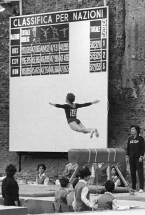

Margarita Nikolaeva (USSR)
1960 Olympic V Gold Medalist

Medal Total
Olympic Games: 2 Gold
Margarita Nikolaeva (nee Petrova) was born on September 23, 1935, and trained at the Army Club in Odessa. She was the Ukrainian junior. champion in 1950 and 1951, and competed at the 1954 World Student Games in Budapest. She married Yuri Nikolaev, a Master of Sport in acrobatics, in 1955 and gave birth to a son in 1957 (she had been added to USSR team to prepare for the 1956 Olympics, but she declined because she was pregnant). Nikolaeva participated in the All-Union training camp in 1958 and impressed the coaches with her unique hecht vault. At the 1960 Olympics, she won 2 gold medals, team and vault, and became Odessa's first Olympic Champion. She received her Merited Master of Sport title after Rome. Leading up the 1964 Tokyo Olympics, she had an appendectomy and was unable to make the team. After retirement from competitive gymnastics, Nikolaeva became a coach in Odessa. She died in 1992.
Competition Results
1960
Olympic Games: 1st Team, 4th AA, 1st V, 4th B
USSR Championships: 5th AA
1961
USSR-USA Dual Meet: 1st Team, 3rd AA, 1st V
USSR Cup: 6th AA, 3rd V
1963
USSR Championships: 4th V
USSR Cup: 6th AA, 2nd V, 3rd FX, 5th UB
1964
USSR Championships: 4th AA
1965
USSR Championships: 6th AA, 3rd AA
USSR Cup: 3rd AA
This page was created on May 28,
2007 and was last updated on February 07, 2021.
© Gymn Forum